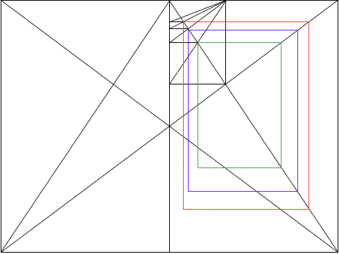
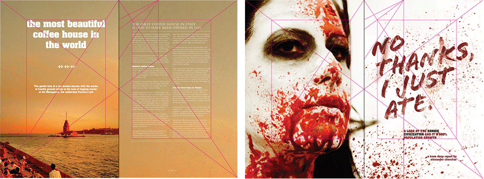

Responsive Grids
Who Am I?
- Sam Richard
- Sr. Front End Developer, NBCUniversal
- Snugug on Twitter, GitHub, The Internet
- Co-Organizer of Team Sass, SassConf
Slides available at
http://snugug.github.io/responsive-grids
(link will be available again at the end)
Why A Grid?
Grids enforce proportion and constraint on your design
They provide order and structure to your information.
The best grid is specific to your content and your design, as it is an extension of both.
Print Grids Are Easy
- Fixed display size
- Fixed content size
- One reading mode
- Limited additional user distraction
Web Grids Are Hard
- Many and varied display sizes
- Variable content lengths, sizes, and types
- Numerous reading modes
- Wide potential range of additional user distractions
We Cannot Think About Web Grids And Print Grids The Same Way
This Crap Doesn't Fly Anymore
Villard De Honnecourt, 13th Century
Villard De Honnecourt, Today
One Grid For One Context Doesn't Exist On The Web

And Yet…
Twitter Bootstrap
Zurb Foundation
YUI Pure
All The Grids Are All The Same!
The Problem?
- System
- an assemblage or combination of things or parts forming a complex or unitary whole
- Framework
- an abstraction in which software providing generic functionality can be selectively changed by additional user-written code, thus providing application-specific software.
They're Systems, Not Frameworks
We've been treating (and calling) these CSS Systems, Frameworks
We've been using these pre-designed systems as crutches
We've been doing it wrong
Step 1: Get Yourself a CSS Preprocessor
Step 2: Fix the Box Model

// We can import all of Compass safely because it doesn't write any CSS.
@import 'compass';
// We switch our box model to Border Box.
// From [Paul Irish](http://paulirish.com/2012/box-sizing-border-box-ftw/)
*, *:before, *:after {
@include box-sizing('border-box');
}Step 3: Get Yourself a Grid Framework
Singularity
gem 'singularitygs', '~>1.2.0.rc.6'require 'singularitygs'@import 'singularitygs';Setting Up A Grid
- Grids
- A collection of columns. Can be single number for symmetric grids or multiple numbers in relation for asymmetric grids. For symmetric grids, each column is considered to have a width of 1.
- Gutters
- Spacing between each column in a grid. The width of a single gutter in relation to a column of width 1. Can also be expressed as a single value with unit for fixed-sized gutters.
- Gutter Styles
- Arrangement of gutters. Default is full gutter width to the opposite side of a column than its float. Can also be split to have half gutter width on either side, or fixed for fixed-width gutters.
Boring Grids
(They're Symmetric)
Twitter Bootstrap's Grid
@include add-grid(12);
@include add-gutter(1/3);Zurb Foundation's Grid
@include add-grid(12);
@include add-gutter(0.9375em);
@include add-gutter-style(split);YUI Pure's Grid
@include add-grid(12);
@include add-gutter(0);Interesting Grids
(They're Asymmetric)
Custom Grids
@include add-grid(1 4 1);
@include add-gutter(1/6);
@include add-gutter-style(split)Compound Grids
// Compound function from [Singularity Extras](https://github.com/Team-Sass/Singularity-extras)
@include add-grid(compound(3, 4));
@include add-gutter(1);Ratio Based Grids
// Ratio function from [Singularity Extras](https://github.com/Team-Sass/Singularity-extras)
@include add-grid(ratio(golden-ratio(), 4));
@include add-gutter(golden-ratio() * 1em);
@include add-gutter-style(split);
Ratio Spiral Based Grids
// Ratio spiral function from [Singularity Extras](https://github.com/Team-Sass/Singularity-extras)
@include add-grid(ratio-spiral(5));
@include add-gutter(1);Mixed Fixed and Fluid Grids
// Calc output style from [Singularity Extras](https://github.com/Team-Sass/Singularity-extras)
@include add-grid(320px 1 2);
@include add-gutter(1em);
@include sgs-change('output', 'calc');Spanning The Grid
Semantic Grids
Singularity is what is referred to as semantic grid system. This means that instead of grid classes being generated that you apply to your HTML, the grid is stored entirely within your CSS and applied directly to the element you want to use it on.
Yes, I know classes don't have semantic value.
- grid-span
- Mixin for "attaching" a selector to columns on the current grid. Two required arguments are $span, how many columns you'd like to span, and $location, what column you'd like to start from
Spanning The Grid - HTML
<body>
<div class="main">Main Section</div>
<div class="first">First Section</div>
<div class="second">Second Section</div>
</body>Spanning The Grid - Sass
@include add-grid(1 4 1);
@include add-gutter(1/6);
.main {
@include grid-span(1, 2);
}
.first {
@include grid-span(1, 1);
}
.second {
@include grid-span(1, 3);
}Spanning The Grid - Display

Nested Grids
When nesting grids, if we want gutters of symmetric and asymmetric grids to line up, we want to snap our asymmetric grids
@include add-grid(snap(2 4 4 2, 1/3));
- layout
- The Layout mixin allows you to selectively override the set global contexts. Each of the global context variables can be overridden individually, and if they aren't, the global one will be used.
Nested Grids - HTML
<body>
<div class="main">
<div class="one">One</div>
<div class="two">Two</div>
<div class="three">
<div class="a">Three A</div>
<div class="b">Three B</div>
<div class="c">Three C</div>
</div>
<div class="four">Four</div>
</div>
<div class="first">First Section</div>
<div class="second">Second Section</div>
</body>Nested Grids (First Nesting) - Sass
@include layout(8, 1/3) {
.one {
@include grid-span(4, 5);
}
.two {
@include grid-span(2, 1);
}
.three {
@include grid-span(5, 3);
clear: both;
}
.four {
@include grid-span(2, 4);
clear: both;
}
}Nested Grid (First Nesting) - Display

Nested Grids (Second Nesting) - Sass
@include layout(snap(1 2 2, 1/3), 1/3) {
.a {
@include grid-span(1, 3);
}
.b {
@include grid-span(1, 1);
}
.c {
@include grid-span(1, 2);
}
}Nested Grid (Second Nesting) - Display

Separation of Concerns
Singularity is a grid framework, it's core competency is grids.
On the other hand, Breakpoint, is a media query framework.
Singularity leverages Breakpoint to introduce responsiveness
gem 'breakpoint', '~>2.4.0'require 'breakpoint'@import 'breakpoint';Breakpoint - The Basics
With Breakpoint, your basic min-width media queries get reduced to a single value
$breakpoint-to-ems: true;
$nav-inline: 532px;
nav {
background: #c0ffee;
@include breakpoint($nav-inline) {
background: #decaff;
}
}nav {
background: #c0ffee;
}
@media (min-width: 33.25em) {
nav {
background: #decaff;
}
}
Breakpoint - No Query Fallbacks
Providing fallbacks for when media queries aren't available is easy too
$breakpoint-no-query-fallbacks: true;
$breakpoint-to-ems: true;
$nav-inline: 532px, 'no-query' '.no-mq';
nav {
background: #c0ffee
@include breakpoint($nav-inline) {
background: #decaff
}
}nav {
background: #c0ffee;
}
@media (min-width: 33.25em) {
nav {
background: #decaff;
}
}
.no-mq nav {
background: #decaff;
}Responsive Grids
You can call each add-* mixin multiple times and specify a min-width breakpoint in which to change that item's global context
Responsive Grid Context - Sass
$bkpt-1: 600px;
$bkpt-2: 1050px;
@include add-grid(.25 8 .25);
@include add-grid(1.618 2.61792 at $bkpt-1);
@include add-grid(2 8 2 at $bkpt-2);
@include add-gutter(.25);
@include add-gutter(1/6 at $bkpt-1);
@include add-gutter(1/3 at $bkpt-2);.main {
@include grid-span(3, 1);
@include breakpoint($bkpt-1) {
@include grid-span(1, 2);
}
@include breakpoint($bkpt-2) {
@include grid-span(1, 2);
}
}.first {
@include grid-span(1, 2);
clear: both;
@include breakpoint($bkpt-1) {
@include grid-span(1, 1);
}
@include breakpoint($bkpt-2) {
@include grid-span(1, 3);
}
}.second {
@include grid-span(1, 2);
clear: both;
@include breakpoint($bkpt-1) {
@include grid-span(1, 1);
clear: left;
}
@include breakpoint($bkpt-2) {
@include grid-span(1, 1);
}
}Responsive Grid Context - Display
Putting It All Together
// Intrinsic Ratio mixin from [Toolkit](https://github.com/team-sass/toolkit)Thank You
Slides available at
http://snugug.github.io/responsive-grids